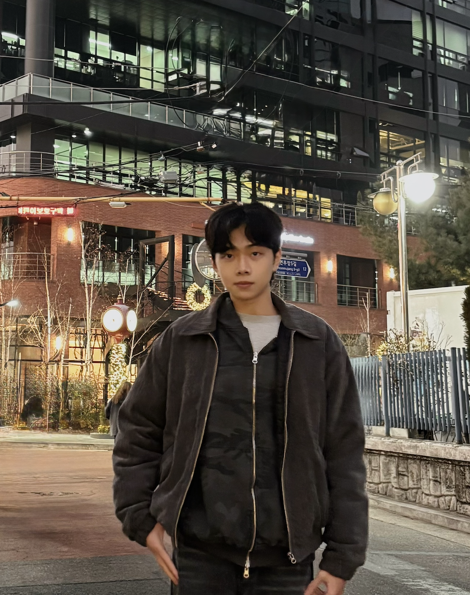

Systems & AI
Requirements interviews, API and data modeling, and AI integration.
View related project ↗PORTFOLIO
Hi, I'm Patrick.
My projects span requirements interviews, API and data-flow design, statistical modeling, and user research, translating business and user needs into systems and analytical work.

CORE COMPETENCIES
Requirements interviews, API and data modeling, and AI integration.
View related project ↗Data preparation, feature engineering, statistical modeling, and evaluation.
View related project ↗Interviews, prototype testing, and thematic analysis to inform design.
View related project ↗Task allocation, resource coordination, and English presentations.
View related project ↗01 / SELECTED WORK
Four projects showing how I investigate needs, connect systems, analyze data, and turn research findings into design recommendations.
Project Lead, System Analysis & Integration
Led requirements interviews and translated tutoring-center needs into APIs, data models, and system flows, coordinating integration across student, teacher, and Gemini AI components.
Full project — AI Mistake Learning Assistant PlatformModel Implementation & Analysis
Built workflows for product-price prediction and job–talent classification, comparing text features, models, and decision thresholds while considering predictive performance and computational cost.
Full project — Statistical Learning ProjectsData Processing, Statistical Analysis & Visualization
Compared gold, a U.S. Treasury ETF, the Swiss franc, and Bitcoin against the S&P 500 using correlation analysis and crisis-period interaction models.
Full project — Financial Asset Hedging AnalysisUser Research & Analysis Team Member
Contributed to a team study with 11 participants, using interviews and prototype testing to identify route-comparison and transfer difficulties and inform localized transit-interface recommendations.
Full project — Multimodal Transit Planning — HCI Research02 / MORE WORK
Explore AI workflows, customer segmentation, business strategy, a C++ game and a platform proposal, plus student-organization and camp experience.
03 / BEYOND THE PROJECTS
Beyond project work, I have taken on budgeting, event planning, and camp administration roles in student organizations, working with different teams under time and resource constraints.
2025.09–2026.06
Managed activity budgets and spending, coordinated resource needs across departments, and supported event planning and execution.
2025.09–2026.06
Contributed to student-association event planning and ball preparations, with documented assignments for music, host sound effects, venue setup, and hosting an activity segment.
2025–2026
Supported camp preparation in public relations and administration, with responsibility for insurance and coach-service vendor communication.
LET’S CONNECT
Want to discuss a project or a potential collaboration? Reach me by email.
Get in touch